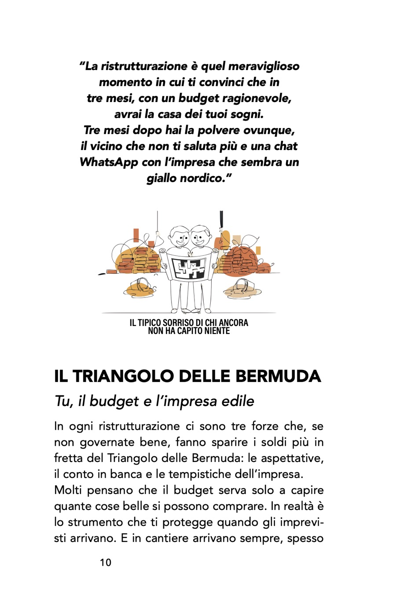
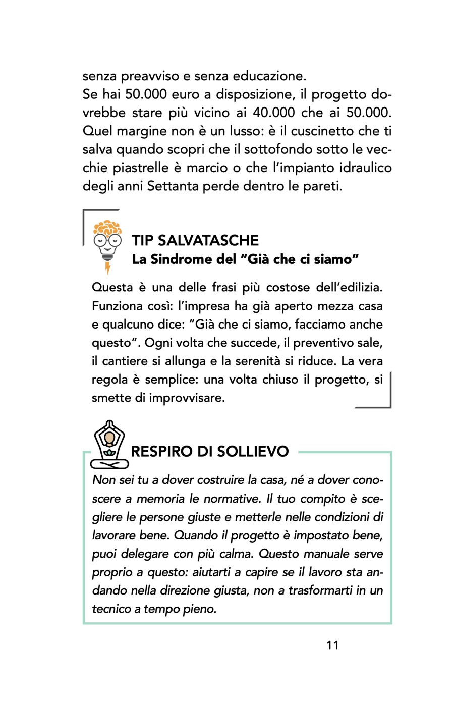

Tip
Un consiglio pratico, una scorciatoia intelligente o un accorgimento utile a progettare meglio e spendere con più criterio.
««Ci sta» non significa «funziona».»
Dal libro, p. 27
Anteprima. Bozza del nuovo sito di Melania Di Blasi, non ancora pubblicata. Il sito in linea oggi è mdbprogettista.it.
Il primo colloquio è sempre gratuito: prenotaloIl libro: «Manuale di sopravvivenza alla ristrutturazione domestica»
Guida pratica per ristrutturare casa con meno errori e più stile. È il libro di Melania Di Blasi, progettista di spazi: quindici capitoli che seguono una ristrutturazione vera, dalla carta alla polvere fino alla bellezza e alla consegna della casa, più un kit di sopravvivenza da portare in cantiere. «Manuale per interior designer e folli che vogliono cimentarsi a ristrutturare casa come piace a loro!»
Si ordina per email: scrivimi e ti rispondo io, con tutti i dettagli.

(prima della posa del pavimento)
Se questo libro è stato aperto, ci sono buone probabilità che una ristrutturazione sia già iniziata nella testa di qualcuno.
La ristrutturazione viene spesso immaginata come una sequenza di scelte estetiche: il pavimento, il rivestimento, il colore delle pareti, la lampada giusta. In realtà, molto prima del gusto, conta l'ordine delle decisioni.
Questo libro non nasce per trasformare il lettore in tecnico, artigiano o direttore dei lavori. Nasce per offrire uno strumento di orientamento dentro una ristrutturazione vera. Per questo segue la logica reale di un cantiere, e non quella idealizzata di Pinterest.
Una casa ben pensata non nasce da cento idee brillanti messe insieme. Nasce da una sequenza corretta di scelte sensate. E sì: a un certo punto arrivano anche le piastrelle.
Il progetto, la burocrazia e il budget.
Il cantiere, le macerie e gli impianti.
Finiture, stanze e consegna della casa.
In fondo al libro, sei attrezzi da portare in cantiere: da usare, fotocopiare e scarabocchiare.
Dentro il libro ricorrono alcuni riquadri, pensati per orientare la lettura e alleggerire il percorso.
Un consiglio pratico, una scorciatoia intelligente o un accorgimento utile a progettare meglio e spendere con più criterio.
««Ci sta» non significa «funziona».»
Dal libro, p. 27
Una verità inossidabile che conviene tatuarsi in testa (e che l'impresa edile spesso dà per scontata).
«La carta sopporta tutto. Il muro portante no.»
Dal libro, p. 13
Quando è il momento di abbassare la tensione e ricordare che non serve sapere tutto: serve capire abbastanza da non farsi travolgere.
«Nei vincoli nascono le idee migliori.»
Dal libro, p. 124
Le saggezze (e le amarezze) da cantiere tramandate oralmente tra chi ci è già passato.
«La polvere passa, i mutui restano.»
Dal libro, p. 9
Testo e grafica sono dell'autrice. Queste sono le pagine 10 e 11: il Triangolo delle Bermuda (tu, il budget e l'impresa edile) e la sindrome del «già che ci siamo».


Verità inossidabili che conviene tatuarsi in testa. Pescane una, poi mettiti alla prova con i giochi.
Regola del cantiere
«La carta sopporta tutto. Il muro portante no.»
Dal libro, p. 13
Se dopo averlo letto vuoi qualcuno accanto, dalla carta alla bellezza, è il mio mestiere. Il primo colloquio è sempre gratuito.